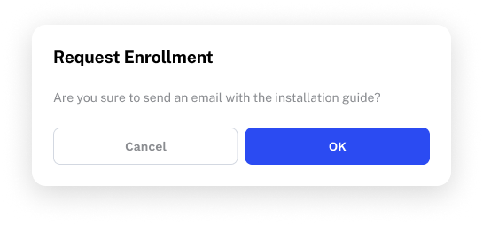
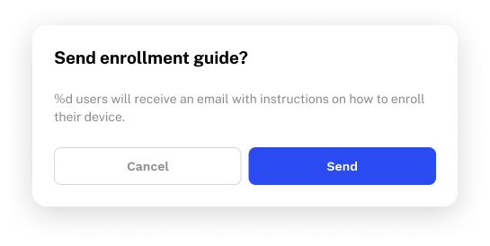
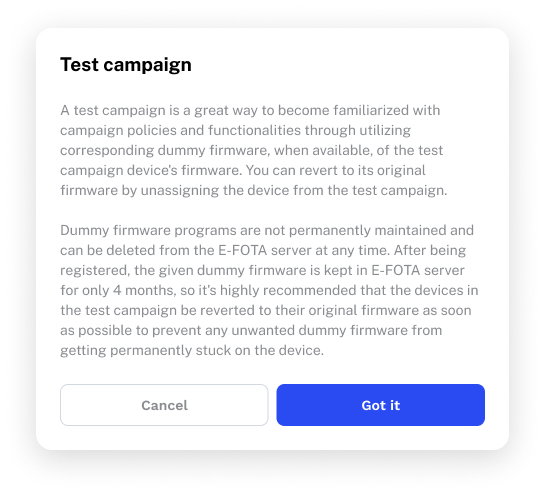
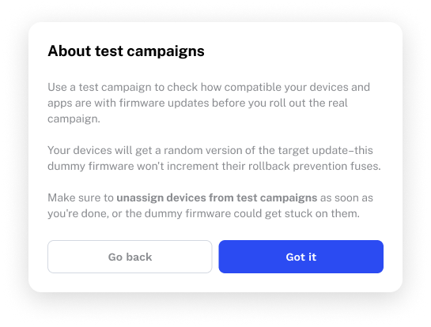

Project overview
Clarity can make or break enterprise software. For busy IT admins managing thousands of devices across global organizations, a confusing dialog or inconsistent term can mean hours of productivity lost creating support tickets or deciphering documentation. The software should speed up their workflows, not get in their way.
When I joined the Samsung Knox team, there were no content guardrails to prevent any of that from happening.
The problem
Without content guidelines, every writer, designer, and PM made their own calls. The result? A suite of products where descriptions and dialogs were inconsistent, different terms were used for the same concept, and the language often reflected the system's logic instead of the user's mental model.
Here's what that looked like in practice.
A clarity problem

This dialog is grammatically awkward and unclear about the recipient, and confirmed with a button that doesn't tell users what they're actually doing.
Now, here's that same dialog with our content guidelines applied:

While this enrollment dialog had a clarity problem, the next one was something more serious.
A risk communication problem

There's actually a critical warning buried in this dialog. If IT admins don't revert their original firmware by unassigning devices from the test campaigns afterwards, the consequences are irreversible.
This version flags the action IT admins need to take to avoid permanent damage to their devices.

These examples might look like isolated problems, but they were actually symptoms of a product built without a shared content language.
Building the business case
Identifying the problem was easy, but getting the organizational support to solve it was a different challenge entirely.
For context, Samsung Knox is a global enterprise operation. At that scale, I was facing deeply established workflows, entrenched ways of working, and no existing framework for UX writing to fit into. If I wanted to build a dedicated content design practice, I had to navigate that inertia at every level of the organization.
So, I started at the top. To secure buy-in at the EVP level, I pitched a series of presentations focused on one key value proposition: UX writing is a low-lift lever with high impact. If done well, it increases returns by helping users actually use and purchase the product. If done poorly (or not at all), support tickets and cancellations would follow.
I knew senior leadership responded well to competitive research, so I grounded the pitch in why Microsoft Intune, a major competitor, was so dominant in the market. Part of the answer was their deliberate investment in content design and UX writing, made evident by their public commitment to move writers further upstream to shape core product experiences.
This EVP was known for asking pointed questions when a pitch had gaps. He had none, and we got the green light.
Building the relationships
That green light was just the beginning. Up next was a harder challenge–getting the global PMs in Korea, who had never worked with UX writers or content designers before, on board.
In a historically bureaucratic organization with well-established workflows, I knew a top-down mandate would only scratch the surface of what we needed to achieve. Real adoption meant UX writing needed to fit naturally into how PMs already work, without being an added layer of process to manage.
I had the opportunity to travel to Korea, so I used it deliberately. Instead of presenting to all the PMs at once, I strategically met with them in smaller groups to facilitate discussion and build relationships. I wasn't there to sell them on UX writing as a concept–I wanted to show them how we could help them solve problems they were already facing.
To help visualize our capabilities, I categorized our work into three levels:
![An inverted pyramid diagram divided into three horizontal sections, labeled from top to bottom: Level 1 — Minor copy edits and content design (the highest volume of work, covering the everyday copy decisions that add up across a product suite); Level 2 — Strategic terminology and content consistency (setting standards for how and when important content appears to users); Level 3 — Information architecture and content strategy (shaping the product itself with feature naming, categorization, and structure).](images/content-design-inverted-pyramid.png)
For each level, I showed concrete examples of work we'd already done. Level 3 was especially interesting, because one insight we found during a card sorting exercise landed particularly well: users weren't looking for the Kiosk feature in its own menu–they expected to create kiosks directly in the profile creation workflow. This small structural decision had a significant usability impact, and it demonstrated the value of upstream content involvement.
Through those sessions, we formalized a model for how UX writers could slot into the existing release process with minimal added friction. PMs who had never worked with us before left with a clearer picture of what we did, why it mattered, and exactly where we fit.
The system
With everyone on board, the real work began. Our mission was clear: build a content design system that would make B2B UX content consistent, scalable, and efficient to create.
I designed a roadmap to get there in three phases.
The UX writing style guide (2023-2024)
The style guide was the obvious starting point. Without shared standards for voice, tone, grammar, and formatting, everything else would be built on an unstable foundation. We completed voice and tone guidelines in Q3 2023, style guidelines in Q4 2023, and component guidelines shortly after.
We saw the impact right away. PMs and designers alike, many of whom weren't native English speakers, told us that the content produced under the new guidelines was noticeably clearer and easier to understand. For a product used across six continents, that level of accessibility is essential.
The glossary (2025)
The organization often faced developmental delays due to misinterpreted product requirements. The culprit? Inconsistent or unclear terminology. It was clear we needed a shared vocabulary from code to customer. If we were confused about our terms, that effect would be compounded for our users.
Before writing a single definition, we conducted two full terminology audits: one across Knox partner portals, and one across the Knox Admin Portal and its associated services. In total, we collected ~8,000 terms across all the portals. Only then did we begin building the glossary in two phases, starting with partner-facing terms before moving to admin-facing ones.
The final result was a glossary of ~250 terms, complete with definitions, usage notes, stop words, and product scopes. We also built the infrastructure to make the glossary more findable and usable, creating a searchable wiki repository for glossary entries.
Content component library and AI agent foundation (2026-)
This phase is where the foundational work pays off with a self-reinforcing system. A library of reusable content components will replace a large portion of the ad-hoc content creation, reducing variation and cutting translation costs significantly.
Then, to make the system scalable without reliance on writers' memory and static guidelines, we're training a custom AI agent on the content design system itself, complete with style guide, glossary, and content component library. With human-in-the-loop evaluations and iterative quality benchmarking, accuracy is built into the process.
Once this work is complete, writers will be freed up for more strategic initiatives–and we'll have reached the natural endpoint of a system designed from the beginning to scale.
The outcomes
The content design system not only improved the product experience, but it also changed how the organization thought about content.
A practice built from scratch
When I started, the Samsung Knox UX writing discipline didn't exist at all. Now, we've grown from a one-person proofreading function to a six-person content design team, embedded in the product process from the start. We've come a long way from being brought in at the end to clean up copy.
Measurable cost savings
The content design system is estimated to cut translation costs by ~20% per release, which is a direct result of replacing ad-hoc string creation with reusable content components built into the design system.
Industry recognition
The work on Knox Manage and the Knox Design System was recognized with four international design awards: the iF Design Award (twice), the Red Dot Award, and the UX Design Award. The big win for writers? Content was credited alongside design.
A foundation for what's next
The style guide, glossary, and content component library are designed to be foundational training data for our custom AI agent that's currently in active development. This system was designed from the beginning to scale, and AI is the logical next step to get there.